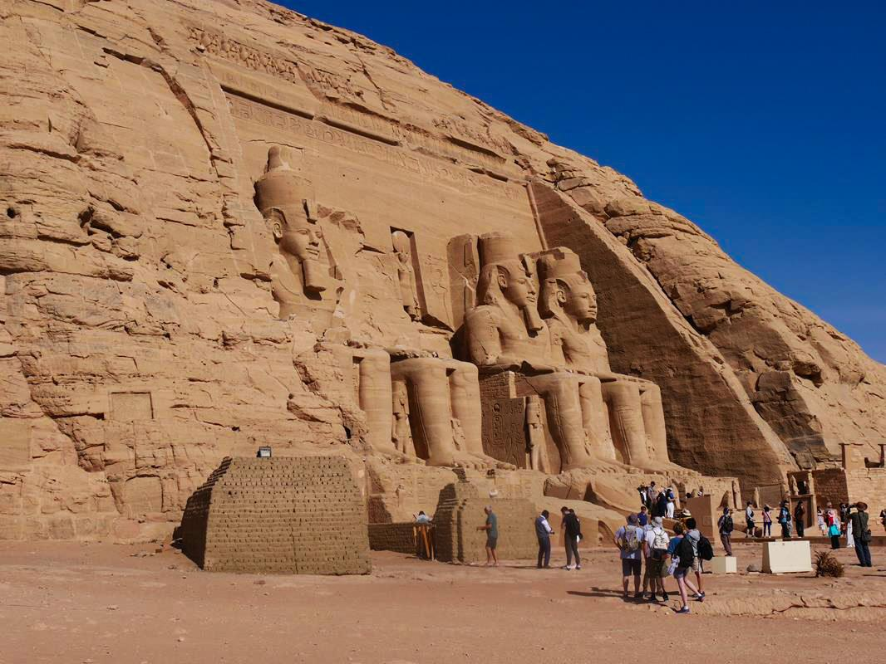

Az egyiptomi kultúra
A Vallás

A legkorábbi civilizáció, amely a mai Görögország területén feltűnt, a Kréta szigetén virágzó minoszi civilizáció volt kb. i. e. 2500 és i. e. 1450 között. Nagyon keveset tudunk a minoszi emberekről, még a nevük is modern kori névadás eredménye Minósz, a legendás krétai király után. Úgy tűnik, nem indoeurópai nép(ek) voltak, nyelvük, az eteokrétai írása lehet a megfejtetlen lineáris A írás. Alapvetően tengeri kereskedő nép voltak. Bár eltűnésük oka bizonytalan (bár egyesek úgy gondolják, a Théra vulkánkitörése vetett véget civilizációjuknak), mindenesetre egy, a szárazföld felől érkező mükénéi görög invázió zárta le történetüket.
Építészet
Az egyiptomi építészeti stílus és technikák az ókori Egyiptom gazdag történelmének és kultúrájának egyik legmeghatározóbb jellemzője, és az építészeti csodák öröksége továbbra is lenyűgözi az embereket és inspirációt nyújt az építészek és művészek számára világszerte.
Szerinted infromatív volt az oldal?